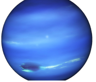

| Planets | Earth | Neptune | Uranus | Venus |
|---|---|---|---|---|
| Mass (kg) | 5.98 x 1024 | 1.02 x 1026 | 8.68 x 1025 | |
| Diameter (km) | 12756 | 49528 | 51118 | |
| Mean density(kg/m3) | 5520 | 1640 | 1290 | |
| Escape velocity(m/s) | 11200 | 23300 | 21300 | |
| Average distance from Sun | 1 AU (149,597,890 km) | 30.07 AU (4,498,252,900 km) | 19.19 AU (2,870,972,200 km) | |
| Rotation period(length of day in Earth days) | 1 (23.93 hours) | 0.67 (19.1 hours) | 0.72 (17.9 Earth hours)(retrograde) | |
| Revolution period(length of year in Earth days) | 365.26 | 60,190 (164.8 Earth years) | 30,685 (84) Earth years) | |
|
|
|
 |
|